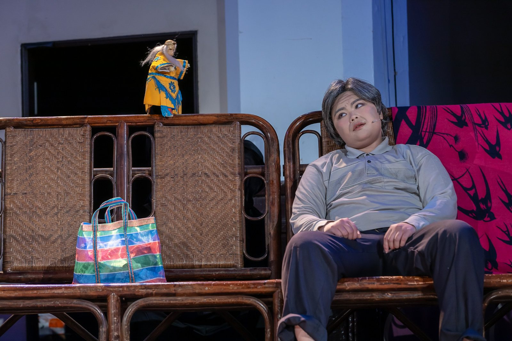
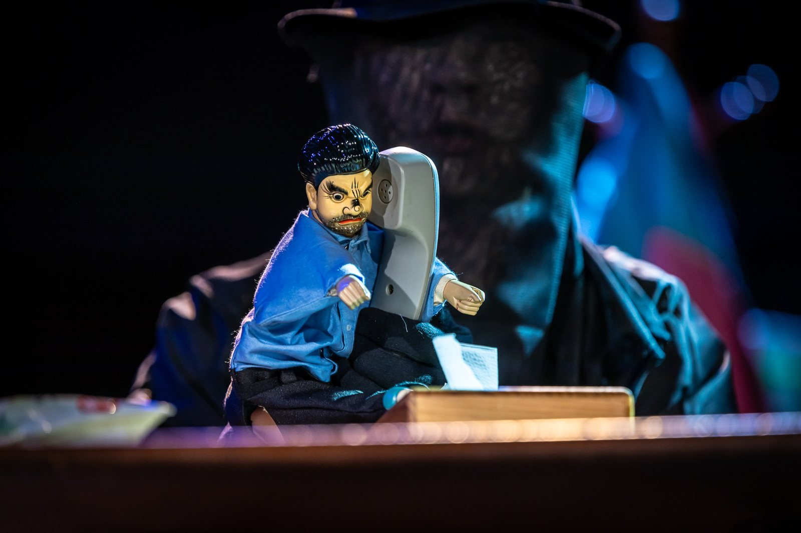
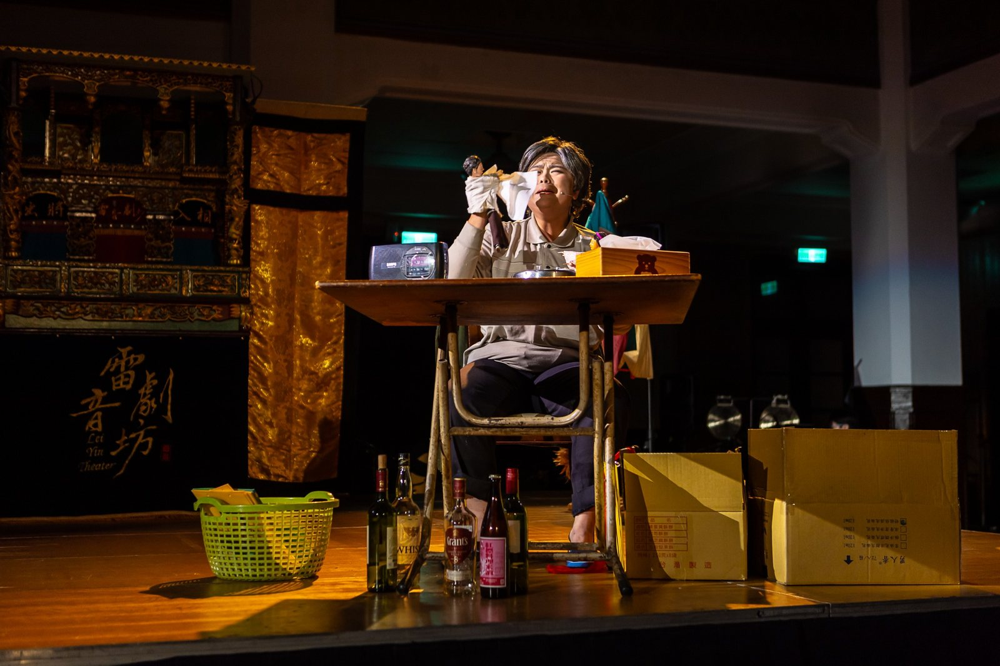

Taiwanese Opera Puppet Theatre · 歌仔調布袋戲
《瘋狂騎士闖戲棚》
Master Peter's Puppet Show – Taiwanese Opera of Puppet Show
About the work
作品介紹
作品改編自《唐吉訶德》中〈彼德師傅的木偶戲〉，以「歌仔調布袋戲」重新詮釋唐吉訶德的精神與故事情節，透過對白、歌唱、音樂與戲中戲形成輕歌劇式的舞臺節奏。
作品以喜劇與幽默接近觀眾，同時把當代社會議題、價值觀與人性拉進傳統戲曲的語彙之中，讓布袋戲面對「創新」與「傳承」的張力。
Production stills
演出劇照
舞臺演出、真人與戲偶同台，以及掌中戲場景片段。


